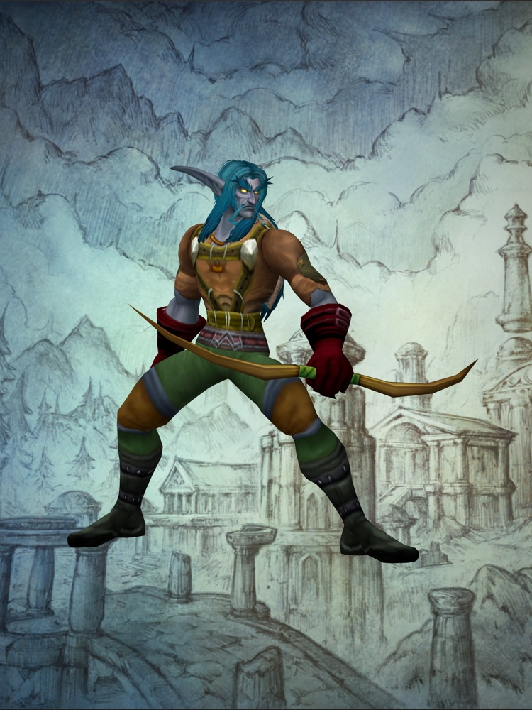

The 2004 guide, and how we read it
The book on the desk is the official World of Warcraft strategy guide, published by BradyGames in November 2004. It went to print before the game launched.
That timing is what makes it interesting. The writers were describing a game that was still changing under them. Raids weren't finished, so the raid chapter is an interview. Battlegrounds hadn't been played, so the book describes the plan. A few things it states with complete confidence turned out not to be true by the time anyone logged in.
The rest of it is careful, generous advice for people who had never played an online game: how to behave in a group, what a quest is, why you should log out at an inn. Most of that has held up better than the numbers.
Why read it now
World of Warcraft: Forever is a new, permanent version of the game set in the same era the book was written for, with its own changes on top. So for the first time in twenty years, a 2004 guide is nearly a guide to a current game. We read it a page at a time and check each thing it says against what Blizzard has confirmed for Forever and what we find in the beta.
How the site is organised
We keep the book's own order: fifteen chapters, from the introduction for new players through the classes and the atlas to the tables at the back. Each chapter page says what the book covers there and lists our entries for it. An entry sets one thing the guide said beside what Forever says, with the source for both.
Chapters we haven't reached are marked as not read yet. They fill in as we go.
How much of the book you'll see
Some of it. Now and then we show a page or quote a line, because the page is the thing we're talking about. Most of the words are our own and most of the pictures are our own renders of characters. This isn't a copy of the book; if you want the whole thing, second-hand copies are easy to find.
You don't need to have played in 2004. Every entry has a short note for first-time players, and the first chapter of the book is the best place to begin.

The fifteen chapters
- IAn Introduction to MMORPGs4 entries
- IILearning Your Place in the World2 entries
- IIIYour First DayNot read yet
- IVJoining the Troops3 entries
- VRising in the Ranks4 entries
- VIThe Finest ToolsNot read yet
- VIIRaids1 entry
- VIIITo the Battle1 entry
- IXCrafting & ProfessionsNot read yet
- XGuildsNot read yet
- XIThe World of AzerothNot read yet
- XIIEquipment TablesNot read yet
- XIIIItems & ConsumablesNot read yet
- XIVBestiaryNot read yet
- XVPet ShopNot read yet